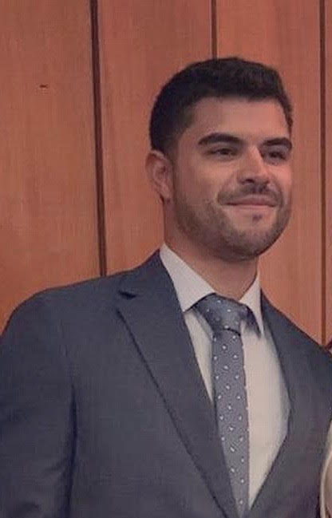

Antecedentes Personales
| Rut: |
18.388.553-7 |
| Nacionalidad: |
Chileno |
| Fecha de nacimiento: |
16/07/1993 |
| Domicilio:: |
Anibal pinto #487, Talcahuano3 |
| Estado civil: |
Soltero |
| Telefono de contacto: |
+56950026676 |
| Coreeo electronico:: |
fvargash@udd.cl |
Resumen Profesional
Ingeniero Comercial de la Universidad del Desarrollo, de profesión, como persona, soy proactivo, ordenado y tengo facilidad para relacionarme con las personas.
Tengo fuerte orientación por el Marketing, Ventas y las nuevas tecnologías.Como profesional busco mantenerme actualizado frente a la transformación digital que viven los mercados actualmente por lo que he realizado un diplomado, distintos
cursos y certificaciones de áreas de mi interés con el fin de mejorar continuamente como profesional.Actualmente estoy en busca de nuevos desafíos y con las ganas
intactas de seguir creciendo y ser un aporte.
Experiencia Laboral
ADMINISTRACIÓN | ABRIL A OCTUBRE 2016 | HOTEL DÜSSELDORF
TAREAS/RESPONSABILIDAD/LOGROS
- Responsable de la Administración y Control del Hotel.
- Desarrollo de nuevas estrategias de negocios, alianzas con clientes potenciales, búsqueda de mejores proveedores de suministros para el Hotel, aplicación de método
Excel para llevar registro y contabilidad del Hotel.
- Los principales logros fueron desarrollar liderazgo, trabajo bajo presión, compromiso laboral y responsabilidad con los objetivos de la empresa.
RESPONSABLE MARKETING Y RRHH | MARZO A JULIO 2017 | ESTADIO ARABE
TAREAS/RESPONSABILIDAD/LOGROS
- Responsable de la instauración y el funcionamiento de nuevos departamentos junto a un equipo y los directivos de la Empresa.
- Desarrollo de una nueva estructura organizacional, nuevas y protocoladas descripciones de cargo para directivos y funcionarios de la empresa.
- Creación página web, segmentación de socios y nuevos clientes potenciales.
- Estrategias de publicidad y marketing para incrementar la incorporación de socios y subarriendos del Estadio Árabe.
RESPONSABLE DIGITALIZACIÓN ABRIL 2019 HASTA LA FECHA | REMATES VARGAS
TAREAS/RESPONSABILIDAD/LOGROS
- Administración y coordinación de equipo desde el contacto con Liquidadores Concursales hasta efectuar las subastas vías online o presencial.
- Trabajo constante con Ley 20.720
- Gestor y encargado de la página web Remates Vargas
- Análisis digital página web.
- Planificar y coordinar publicidades en diarios oficiales de la zona donde se efectué la subasta.
Antecedentes Academicos
COLEGIO ARTURO PRAT CHACÓN
TALCAHUANO |
1998 A 2011 |
INTERCAMBIO UNIVERISITARIO EN EL EXTRANJERO
UNIVERSIDAD REY JUAN CARLOS
MADRID, ESPAÑA. |
AGOSTO A ENERO 2017 |
INGENIERO COMERCIAL
UNIVERSIDAD DEL DESARROLLO SEDE CONCEPCIÓN |
2012 A 2019 |
DIPLOMADO EN CORRETAJES DE PROPIEDADES
Y GESTIÓN INMOBILIARIA
UNIVERSIDAD BERNARDO O’HIGGINS |
MARZO A JULIO 2020 |
Competencias
- Dominio de herramientas MS Office-Excel, Word, Power Point Nivel Intermedio.
- Dominio de Inglés Nivel Intermedio oral y escrito (cursos independientes en Wall Street Institute)
Red social
Linkedin Franco Vargas Hernández